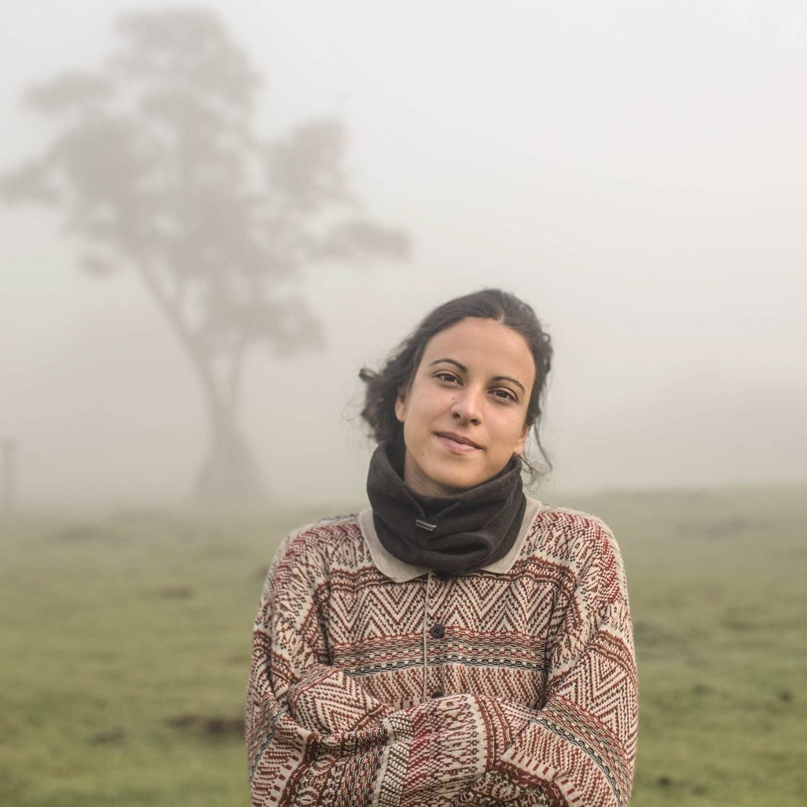
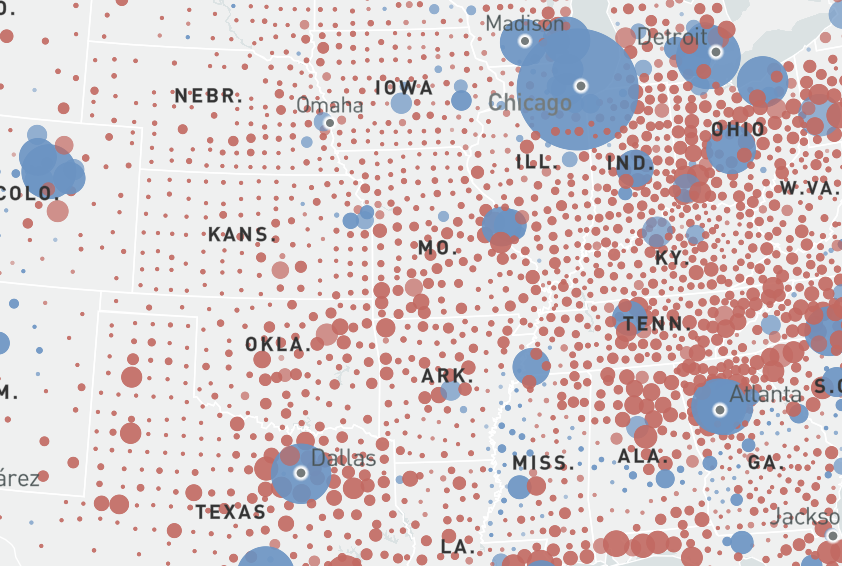
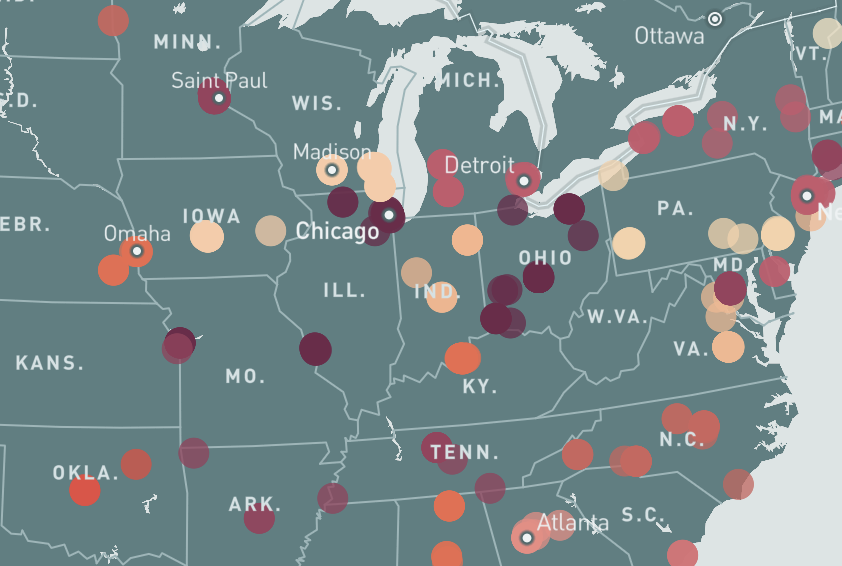

Hello, folks!
I'm Patricia, a photojournalist able to tell human-interest stories with data.
Download my resume here or drop me a message at pmartisa@gmail.com

Presidential Election Maps
Who Won Where?
See the presidential candidate winner in each state and county of America.
MapBox, Geopandas

Presidential Election Maps
America's Racial Reckoning
Incidents of police violence registered accross America after the killing of George Floyd. This is followed by an independent second map representing economic activity at a state and county level.
Mapbox